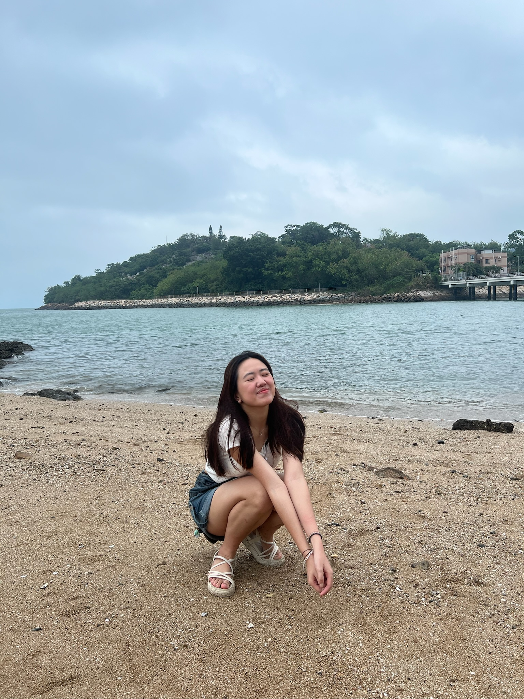

My Resume
Sidney Ribli

Education History
Hong Kong University of Science and Technology
Major in Computer Science
SMAK 6 Penabur High School
Experience
USThing
UI/UX Team
- Developed a user-friendly calendar interface on the website, enabling students to view their schedules on a weekly basis for enhanced organization.
- Conceptualized and designed the “Find A Buddy” tool, allowing students to input their hobbies to connect with like-minded peers at HKUST, reaching 2000+ user engagement.
- Designed the “TimeMatch” feature, facilitating schedule compatibility among users, enabling users to identify mutual free time for socializing and collaboration.
Peer Mentor
Engineering Peer Mentor
- Provided academic advising to 13 engineering freshmen, addressing their questions and guiding them through course selection processes.
- Initiated an academic orientation for all engineering freshmen, helping them acclimate to university life and understand academic resources.
Southeast Asian Students Association
Committee - Design and Marketing
- Designed a varsity jacket for fellow committees that highlights the cultural differences of Southeast Asian countries.
- Executed campaigns to promote orientation events through social media, gathering 100 participants.
- Delivered a presentation to 60 freshmen, sharing personal experiences and offering advice on academic and personal development.
Volunteer Experience
Math Tutor
New Hope Refugee Ministries
- Taught 28 students aged 13-20 years old students various Math topics.
- Developed personalized lesson tailored to students needs to improve overall academic performance.
- Increased time management and organizational skills
The Next Changemaker
Yang Memorial Methodist Social Service
- As a team of 3, initiated 2 events for ethnic minority kids, to increase cultural awareness on Hong Kong traditions.
- Led a group of 10 volunteers, delegating tasks and responsibilities to achieve project objectives within the designated timeframe.
Skills
IT Skills: Microsoft Office, HTML, C++, Phyton, JavaScript, CSS, Video Editing (Adobe Premiere Pro), Graphic Design (Canva, Basic Adobe Illustrator, Adobe Photoshop, Figma and Spark AR)
Language: English (IELTS: 8.0), Bahasa Indonesia (Bilingual Proficiency), Chinese (Basic Proficiency), Cantonese (Beginner Proficiency)
Soft Skills: Leadership, Team Player, Adaptive, Communicative
Others
About Me
Contact Me